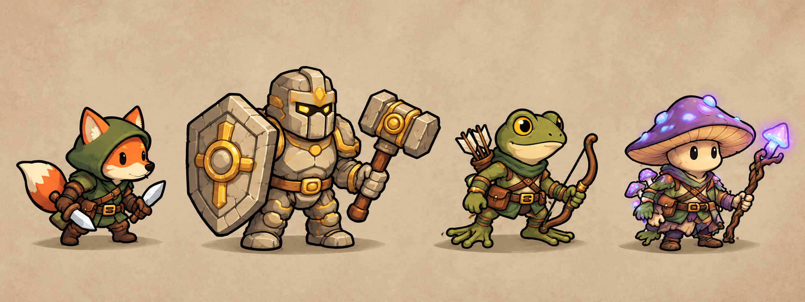

Les héros 2D déjà préparés
Originaux du 21 octobre 2026, retrouvés dans le début du chat « 2d isometrique ». Le Vulpin avait reçu « oui c’est parfait », puis la planche des quatre personnages avait été validée.

De gauche à droite : Vulpin voleur · Lithide paladin · Batrafian ranger · Mycean mage.
Ces concepts illustrés avec personnages en trois quarts précèdent la migration du décor vers la grille isométrique 2:1 actuelle. Ils donnent l’identité et le style des héros ; ils ne constituent pas encore un jeu de sprites directionnels calibrés et animés. Les originaux ci-dessous ont été copiés à l’identique, sans nouvelle génération.
Provenance des images et traces des validations